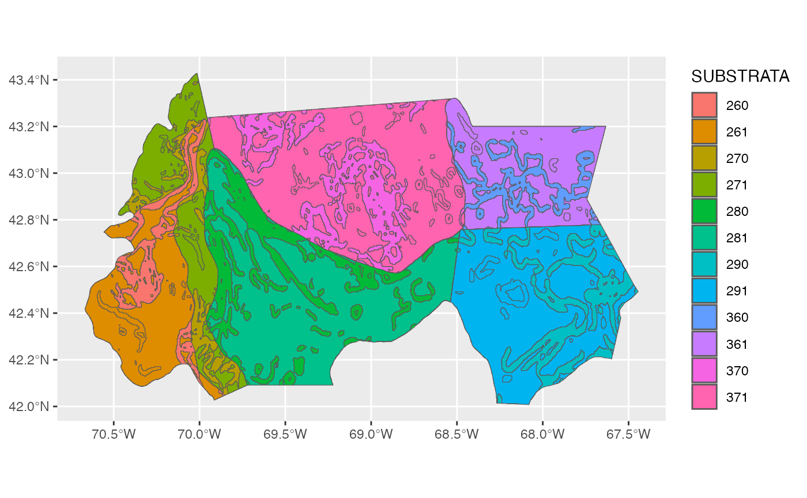

#> Note: The following datasets are deprecated and will be removed in a future version:
#> • BTS_Strata
#> • EcoMon_Strata
#> • Shellfish_Strata
#> • Shrimp_Strata
#> Please use https://mdeb-nefsc-noaa.hub.arcgis.com/datasets instead:
#> +/noaa::bottom-trawl-survey/about
#> +/noaa::ecosystem-monitoring-survey/about
#> +/noaa::atlantic-surfclam-and-ocean-quahog-survey/about
#> +/noaa::sea-scallop-survey/about
#> +/noaa::northern-shrimp-survey/aboutThe Northeast Fisheries Science Center Marine Development GIS Data Hub created
by the Marine Development and Ecology Branch (MDEB) host many spatial
datasets. The NEFSCspatial package provides access to these
datasets and serves them up as sf objects.
A current list of all data sets included in the package:
| title | dataset_name |
|---|---|
| Gulf of Maine Bottom Longline Survey | gombll_substrata |
| Gulf of Maine Bottom Longline Survey | gombll_strata |
| Marine Mammal and Sea Turtle Survey | mmst_strata |
| Ecosystem Monitoring Survey | ecomon_stations |
| Ecosystem Monitoring Survey | ecomon_strata |
| Coastal Shark Bottom Longline Survey | csbll_stations |
| Coastal Shark Bottom Longline Survey | csbll_strata |
| Northern Shrimp Survey | shrimp_strata |
| Turtle Ecology Survey | turtle_strata |
| Bottom Trawl Survey | bts_strata |
| Hook and Line Survey | hl_strata |
| Passive Acoustic Monitoring Survey | pam_deployments |
| Atlantic Surfclam and Ocean Quahog Survey | sc_strata |
| Atlantic Surfclam and Ocean Quahog Survey | oq_strata |
| eDNA Survey | edna_stations |
| eDNA Survey | edna_strata |
| Cooperative Atlantic States Shark Pupping and Nursery Survey | coastspan_strata |
| Seal Aerial Survey | seal_stations |
| North Atlantic Right Whale Aerial Survey | narw_lines |
| North Atlantic Right Whale Aerial Survey | narw_strata |
| Sea Scallop Survey | scallop_strata |
| Sea Scallop Survey | scallop_strata_historic |
We can then plot any attribute, for example the “SUBSTRATA” attribute
of the gombll_substrata dataset:
